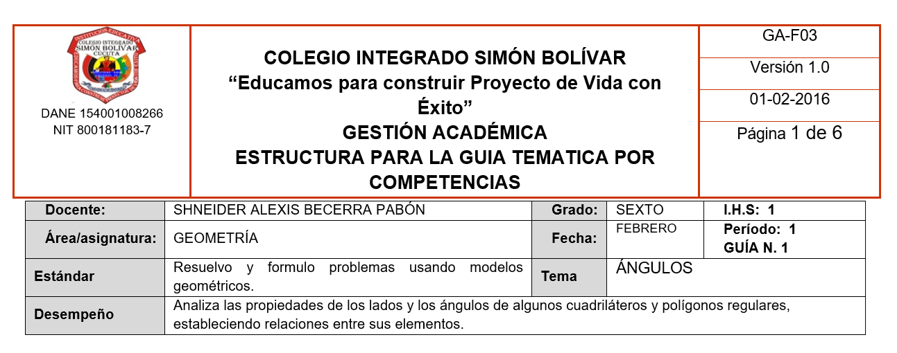
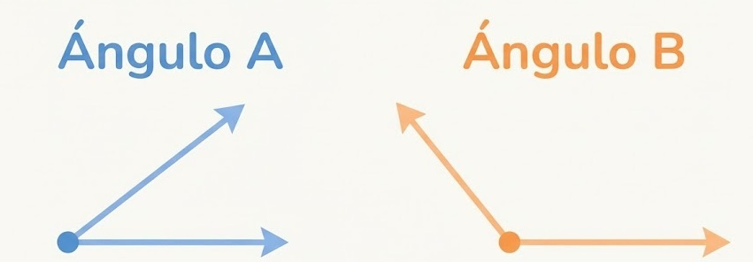

1P GUIA 1. ÁNGULOS

EXPLORACIÓN
Antes de comenzar a estudiar qué es un ángulo, vamos a observar un instrumento que se usa mucho en geometría: el transportador.
Este instrumento nos permite medir y dibujar ángulos de diferentes tamaños.
Observa con atención un transportador (real o digital) y responde:
- ¿Qué forma tiene el transportador?
- ¿Qué números aparecen en él y cómo están organizados?
- ¿Dónde crees que debe ubicarse el centro del transportador para medir un ángulo correctamente?
- Muchos transportadores tienen dos escalas de números. ¿Para qué crees que sirve esto?
No te preocupes si no sabes todas las respuestas. La idea es explorar y pensar antes de aprender la definición formal.

ANALIZA
Los ángulos no solo aparecen en los cuadernos o en las reglas. También los encontramos en muchas situaciones de la vida diaria, por ejemplo, en algunos deportes.
Observa la imagen de la gimnasta y responde:
- ¿Qué figura forman sus piernas?
- ¿En qué parte del cuerpo estaría el vértice de esa figura?
- Sin medir todavía, ¿crees que el ángulo que se forma es agudo, recto u obtuso? Explica por qué.
- Si la gimnasta abre más las piernas, ¿el ángulo que se forma aumenta o disminuye?
Piensa con calma y responde usando tus propias palabras. No hay problema si dudas: lo importante es razonar.

CONOCE ALGO NUEVO
Ahora que ya comprendemos la idea de un ángulo, podemos escribir su definición matemática:
Un ángulo es una figura formada por dos rayos que tienen el mismo origen.
Ese origen se llama vértice, y la medida del ángulo se expresa en grados (°).
Esta definición nos ayuda a ser más precisos cuando trabajamos geometría.

Clasificación de los ángulos según su medida
Los ángulos no siempre tienen el mismo tamaño.
Dependiendo de cuántos grados midan, los ángulos se pueden clasificar en diferentes tipos.
A continuación, conocerás los tipos de ángulos más importantes según su medida.
- Ángulo agudo
Un ángulo agudo es aquel que mide menos de 90°.
Es un ángulo pequeño, que no alcanza a formar un ángulo recto.
Ejemplos de ángulos agudos se pueden encontrar en las puntas de algunas figuras o cuando dos líneas se abren poco.
- Ángulo recto
Un ángulo recto es aquel que mide exactamente 90°.
Este tipo de ángulo se reconoce fácilmente porque forma una “L” perfecta.
Muchos objetos de la vida diaria, como las esquinas de una hoja o de un cuaderno, forman ángulos rectos.
- Ángulo obtuso
Un ángulo obtuso es aquel que mide más de 90° pero menos de 180°.
Es un ángulo más abierto que el recto, pero que no llega a ser completamente recto o extendido.

ACTIVIDAD DE APRENDIZAJE
Ahora que conoces los tipos de ángulos según su medida, es momento de poner en práctica lo aprendido.
Observa con atención cada uno de los siguientes ángulos y realiza las actividades propuestas.

Actividad 1: Identifico y clasifico
Para cada ángulo:
- Observa su apertura.
- Decide si es ángulo agudo, recto u obtuso.
- Escribe el nombre del tipo de ángulo.
No es necesario medir todavía. Usa lo que aprendiste sobre la forma y la apertura de cada ángulo.
Actividad 2: Relaciono con la medida
Observa la medida de cada ángulo y completa:
- Si el ángulo mide menos de 90°, es un ángulo __________.
- Si el ángulo mide 90°, es un ángulo __________.
- Si el ángulo mide más de 90° y menos de 180°, es un ángulo __________.
Actividad 3: Explico con mis palabras
Elige uno de los ángulos anteriores y responde:
- ¿Por qué lo clasificaste de esa manera?
- ¿Qué característica te ayudó a tomar la decisión?
Medición de ángulos con el transportador
Hasta ahora hemos aprendido a reconocer y clasificar los ángulos según su medida.
Ahora vamos a aprender cómo medir un ángulo usando un instrumento llamado transportador.
El transportador nos permite saber cuántos grados mide un ángulo.
Para medir correctamente, es muy importante ubicar bien el transportador y leer la escala correcta.
¿Cómo se mide un ángulo con el transportador?
Para medir un ángulo correctamente, sigue estos pasos:
- Ubica el centro del transportador exactamente sobre el vértice del ángulo.
- Alinea uno de los lados del ángulo con la línea base del transportador.
- Observa la escala correcta (la que comienza en 0° desde el lado alineado).
- Lee la medida del ángulo en grados (°) donde llega el otro lado del ángulo.
Si el transportador no está bien ubicado, la medida no será correcta.

Video complementario:
https://youtu.be/CRXi4jQiRIM?si=Nb3jix-ZEjJH3Ldi
Actividad 4: Mido ángulos
- Observa los ángulos propuestos.
- Usa el transportador para medir cada uno.
- Escribe la medida en grados.
- Clasifica cada ángulo como agudo, recto u obtuso.

Ángulos complementarios y ángulos suplementarios
Además de medir y clasificar ángulos, en matemáticas también es importante relacionar unos ángulos con otros.
Algunos ángulos, cuando se juntan, completan una medida especial.
A estos ángulos los llamamos complementarios y suplementarios.
- Ángulos complementarios
Dos ángulos son complementarios cuando la suma de sus medidas es 90°.
Esto significa que, al unirse, forman un ángulo recto.
Ejemplo:
Si un ángulo mide 30° y otro mide 60°, entonces:
30° + 60° = 90°
→ Son ángulos complementarios.
- Ángulos suplementarios
Dos ángulos son suplementarios cuando la suma de sus medidas es 180°.
Esto significa que, al unirse, forman un ángulo llano (una línea recta).
Ejemplo:
Si un ángulo mide 110° y otro mide 70°, entonces:
110° + 70° = 180°
→ Son ángulos suplementarios.
Actividad 5: Completo la medida
- Si un ángulo mide 35°, ¿cuánto debe medir su ángulo complementario?
- Si un ángulo mide 120°, ¿cuánto debe medir su ángulo suplementario?
- Explica con tus palabras qué diferencia hay entre ángulos complementarios y suplementarios.
No necesitas dibujar. Solo piensa en la suma.
Fuente bibliográficas
MEN (2006) – Estándares
MEN (2016) – DBA Matemáticas 6° y 7°
Santillana (2017) – Vamos a aprender matemáticas 6°
GeoGebra (s. f.)